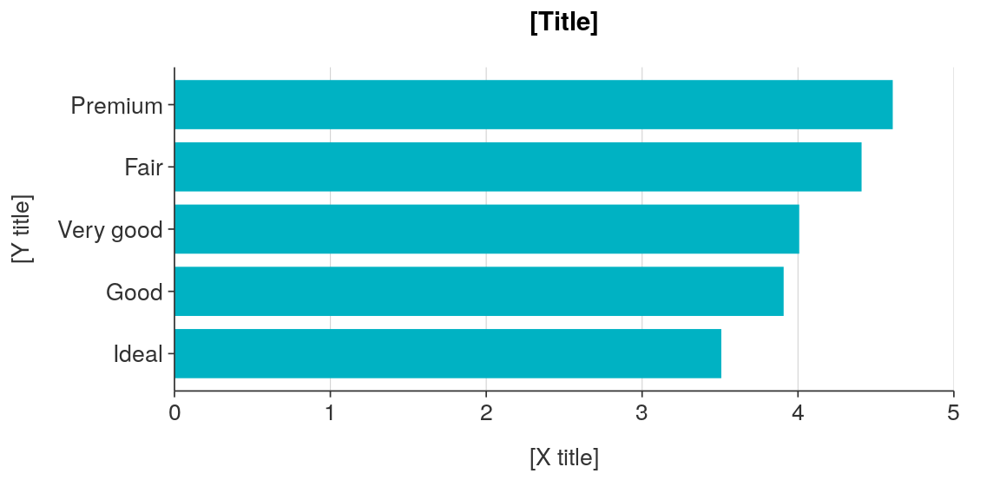
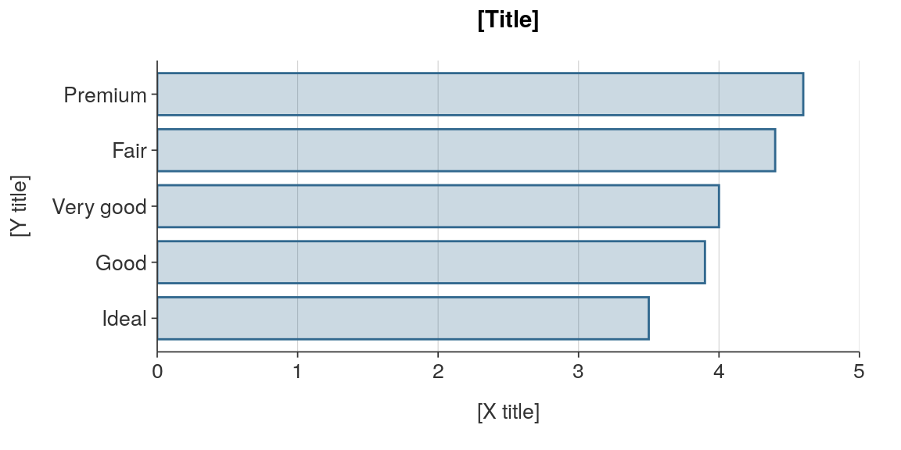
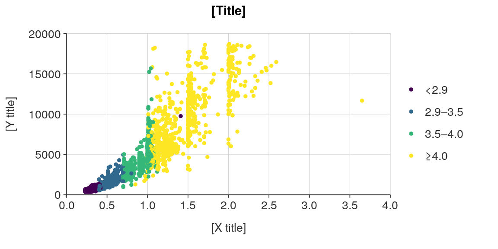
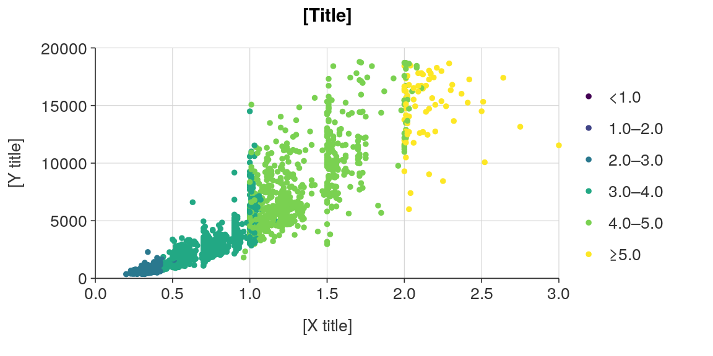
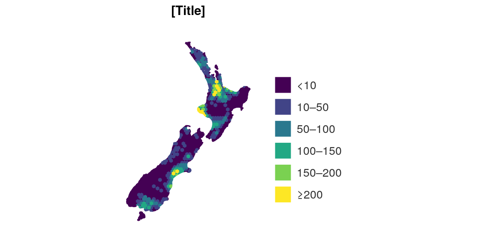

simplevis unites two concepts into one to make things simpler for users:
The colour palette can be changed from the default viridis colours by providing a character vector of hex codes to the pal argument.
plot_data <- ggplot2::diamonds %>% mutate(cut = stringr::str_to_sentence(cut)) %>% group_by(cut) %>% summarise(average_price = mean(price)) %>% mutate(average_price = round(average_price / 1000, 1)) plot_data #> # A tibble: 5 x 2 #> cut average_price #> <chr> <dbl> #> 1 Fair 4.4 #> 2 Good 3.9 #> 3 Ideal 3.5 #> 4 Premium 4.6 #> 5 Very good 4 ggplot_hbar(plot_data, average_price, cut, pal = "#00b2c3")

As described above, use a _col function to colour by a variable and provide a col_var.
Emphasis can be given to the outline of polygons by using an alpha argument to add opacity to the fill of polygons.
plot_data <- ggplot2::diamonds %>% mutate(cut = stringr::str_to_sentence(cut)) %>% group_by(cut) %>% summarise(average_price = mean(price)) %>% mutate(average_price = round(average_price / 1000, 1)) plot_data #> # A tibble: 5 x 2 #> cut average_price #> <chr> <dbl> #> 1 Fair 4.4 #> 2 Good 3.9 #> 3 Ideal 3.5 #> 4 Premium 4.6 #> 5 Very good 4 ggplot_hbar(plot_data, average_price, cut, alpha = 0.25)

Alternatively, for boxplot, hbar or vbar, there is a line_black == TRUE argument from simplevis version 2.6.2 onwards. This is a unique situation where all lines (including outlines) are coloured black (even if colouring by a variable), but the fill remains coloured normally in accordance with the pal.
Otherwise, colour will be equivalent for the colouring of lines (including outlines) and the colouring of the fill of polygons.
The point (and sf) ggplot functions allow for colouring by a numeric or categorical variable. If the col_var is numeric, the user can specify whether they want to colour using a vector of bins () or by using a vector of quantiles.
plot_data <- ggplot2::diamonds %>% slice_sample(prop = 0.05) plot_data #> # A tibble: 2,697 x 10 #> carat cut color clarity depth table price x y z #> <dbl> <ord> <ord> <ord> <dbl> <dbl> <int> <dbl> <dbl> <dbl> #> 1 0.77 Premium D SI1 59.5 60 2939 6.01 5.95 3.56 #> 2 0.72 Good J VS1 63.7 54 2062 5.71 5.68 3.63 #> 3 2.03 Very Good I SI1 62.3 60 16392 8.01 8.07 5.01 #> 4 1.32 Fair E SI2 65.2 58 6221 6.86 6.79 4.45 #> 5 0.3 Very Good F VS2 62.8 58 605 4.24 4.29 2.68 #> 6 1.05 Very Good F VS2 62.8 57 6808 6.45 6.48 4.06 #> 7 0.32 Very Good E VS2 62.8 54 702 4.35 4.38 2.74 #> 8 1.01 Premium I VVS1 62 59 4989 6.39 6.32 3.94 #> 9 1.2 Premium F VVS2 62.8 60 10580 6.79 6.74 4.25 #> 10 0.42 Premium H SI1 62 59 898 4.79 4.76 2.96 #> # … with 2,687 more rows ggplot_point_col(plot_data, x_var = carat, y_var = price, col_var = z, col_method = "quantile", col_cuts = c(0, 0.25, 0.5, 0.75, 1))

ggplot_point_col(plot_data, x_var = carat, y_var = price, col_var = z, col_method = "bin", col_cuts = c(0, 1, 2, 3, 4, 5, Inf))

ggplot_sf_col(example_sf_polygon, col_var = density, col_method = "bin", col_cuts = c(0, 10, 50, 100, 150, 200, Inf), col_labels_dp = 0)

leaflet_sf_col(example_sf_polygon, col_var = density, col_method = "bin", col_cuts = c(0, 10, 50, 100, 150, 200, Inf), col_labels_dp = 0)